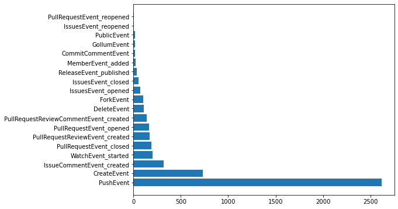

api = GhApi()The events API
Helpers for getting GitHub API events
GhApi.list_events
GhApi.list_events (per_page=30, page=1, username=None, org=None, owner=None, repo=None)
Fetch public events for repo network, org, user, or all
GhApi.list_events_parallel
GhApi.list_events_parallel (per_page=30, n_pages=8, username=None, org=None, owner=None, repo=None)
Fetch as many events from list_events in parallel as available
list_events and list_events_parallel support the following:
| Events from | Example |
|---|---|
| Organization | api.list_events_parallel(org='fastai') |
| User | api.list_events_parallel(username='jph00') |
| Repository network | api.list_events_parallel(owner='fastai', repo='fastcore') |
| All public | api.list_events_parallel() |
GhEvent
Class for events returned from `fetch_events
print([snake2camel(o)+'Event' for o in Event])['PageBuildEvent', 'ContentReferenceEvent', 'RepositoryImportEvent', 'CreateEvent', 'WorkflowRunEvent', 'DeleteEvent', 'OrganizationEvent', 'SponsorshipEvent', 'ProjectColumnEvent', 'PushEvent', 'ContextEvent', 'MilestoneEvent', 'ProjectCardEvent', 'ProjectEvent', 'PackageEvent', 'PullRequestEvent', 'RepositoryDispatchEvent', 'TeamAddEvent', 'WorkflowDispatchEvent', 'MemberEvent', 'MetaEvent', 'CodeScanningAlertEvent', 'PublicEvent', 'NeedsEvent', 'CheckRunEvent', 'SecurityAdvisoryEvent', 'PullRequestReviewCommentEvent', 'OrgBlockEvent', 'CommitCommentEvent', 'WatchEvent', 'MarketplacePurchaseEvent', 'StarEvent', 'InstallationRepositoriesEvent', 'CheckSuiteEvent', 'GithubAppAuthorizationEvent', 'TeamEvent', 'StatusEvent', 'RepositoryVulnerabilityAlertEvent', 'PullRequestReviewEvent', 'LabelEvent', 'InstallationEvent', 'ReleaseEvent', 'IssuesEvent', 'RepositoryEvent', 'GollumEvent', 'MembershipEvent', 'DeploymentEvent', 'DeployKeyEvent', 'IssueCommentEvent', 'PingEvent', 'DeploymentStatusEvent', 'ForkEvent', 'ScheduleEvent']GhApi.fetch_events
GhApi.fetch_events (n_pages=3, pause=0.4, per_page=30, types=None, incl_bot=False, username=None, org=None, owner=None, repo=None)
Generate an infinite stream of events, optionally filtered to types, withpause` seconds between requests
load_sample_events
load_sample_events ()
Load sample events, downloading if needed
save_sample_events
save_sample_events (n=5000)
Save the most recent n events as compressed JSON
GhEvent.full_type
Concatenation of type and payload.action (if available)
5000 sample events (taken from a single recent period) are available, and are downloaded and cached by load_sample_events. full_type provides the combination of type and payload.action (where available) for each event. Here’s the frequency of all full_types in the sample:
evts = load_sample_events()
x,y = zip(*Counter([o.full_type for o in evts]).most_common())
plt.figure(figsize=(8, 6))
plt.barh(x,y);
GhEvent.emoji
Emoji for event from evt_emojis
GhEvent.description
Description of event
GhEvent.text
Text (e.g. body or title) of event, if exists
You can use the description, text, and emoji properties to display events, e.g:
exs = [first(evts, risinstance(o)) for o in described_evts]
def _fmt_evt(o):
res = f'{o.emoji} **{o.actor.login}** ' + truncstr(f'{o.description} *{o.repo.name}',60) + '*'
if o.text: res += f': "{truncstr(o.text, 50)}"'
return res.replace('\n',' ')
Markdown('|Type|Description|\n|:--|:--|\n' +
'\n'.join(f'|{camel2words(o.type.replace("PullRequest","PR ")[:-5])}|{_fmt_evt(o)}|' for o in exs))| Type | Description |
|---|---|
| Push | ⭐ fedya pushed 1 commits to “rolling” in OpenMandrivaAssociation/g… |
| Delete | ✂ dependabot[bot] deleted branch “packit-0.5.0” in paketo-buildpacks/occam |
| Create | 🏭 github-classroom[bot] created repository in Introduction-to-Programming-OSOWSKI/…: “1-5-add-two-numbers-noraahlman23 created by GitHu…” |
| PR | 📬 JerryMacedoCastro opened PR #1 on JerryMacedoCastro/tb-arquitetura-js: “Input component created” |
| Member | 💃 github-classroom[bot] added member noraahlman23 in Introduction-to-Programming-O… |
| Public | ♥ navikt made public repo navikt/syfoinntektsmelding |
| PR Review Comment | 🗨 fruttasecca created review comment on PR #97 in orchest/orchest: “Does this make it so that users coming from an ol…” |
| Fork | 🍽 amin-lotf forked vinaygaba/Learn-Jetpack-Compose-By-Example: “🚀 This project contains various examples that sho…” |
| Commit Comment | 🎉 vercel[bot] created commint comment in Samaraferreira/test-frontend: “Successfully deployed to the following URLs: * […” |
| Watch | 👀 ikarius started watching jorgebucaran/awsm.fish |
| PR Review | 💌 fruttasecca created PR review in orchest/orchest |
| Release | 🚀 github-actions[bot] published release v1.1.3 in vouv/srun |
| Issues | 🐛 efritz opened issue #16915 on sourcegraph/sourcegraph: “auto-indexing: Add docker/src-cli command wall cl…” |
| Gollum | 📚 TradingToolCrypto created wiki page in TradingToolCrypto/TradingTool-Wiki |
| Issue Comment | 💬 jerhard created comment on issue #2570 in ls1intum/Artemis: “Do you think that spaces (or even white space cha…” |